Caso 01 / 04
Carnaval de Polonuevo 2026
Contexto
La edición 2026 del carnaval tenía una programación amplia: lectura de bando y coronación, reyes infantiles, carnaval de los niños, guacherna, carnavalito y gran toma municipal. Cada evento tiene su pieza, y todas se leen como una sola fiesta.
Concepto
#PonteBacano, con el diablo arlequín como figura central.El lema firma cada pieza, siempre con su asterisco
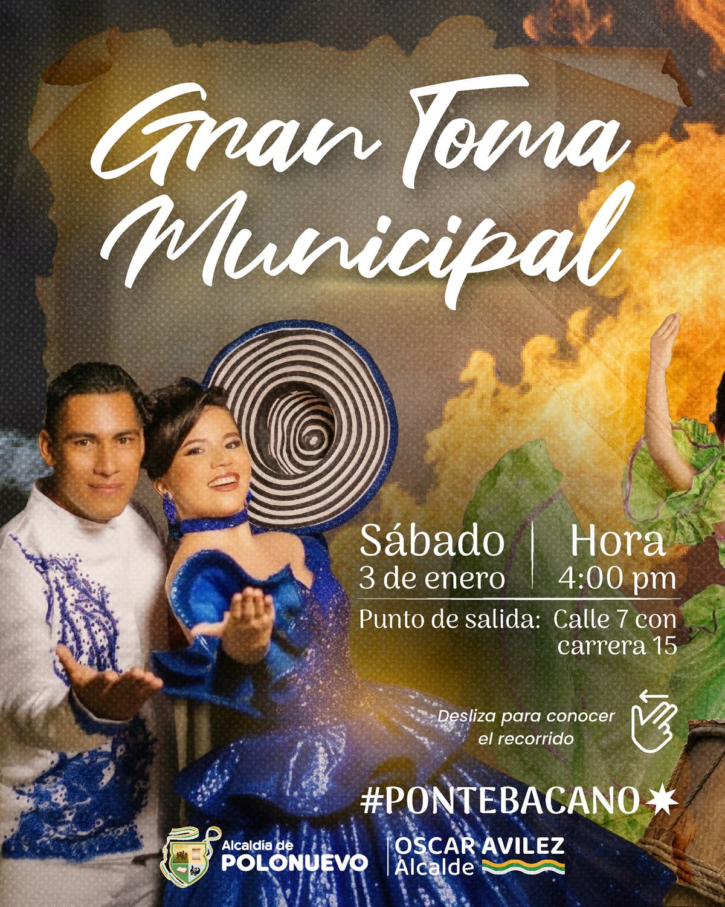
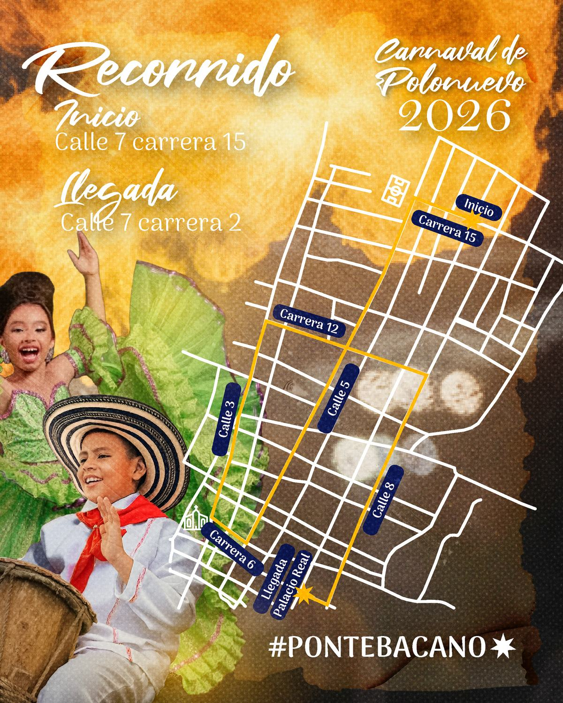
Sistema
Negro, fuego y oro.
Lo que se repite en todas las piezas y las vuelve una sola campaña.
#1A1414
#7A1F1A
#E8562A
#F2B33D
#F4E3C1
Paleta tomada de las piezas
- Logotipo
- Lettering caligráfico con ornamentos y el año en grande.
- Imagen
- Fotografía de personajes del carnaval sobre fondos de fuego y humo.
- Firma
- #PonteBacano con asterisco, al pie de cada pieza.
- Estructura
- Logotipo arriba, evento y datos al centro, franja institucional abajo.
Seis eventos, una misma estructura.
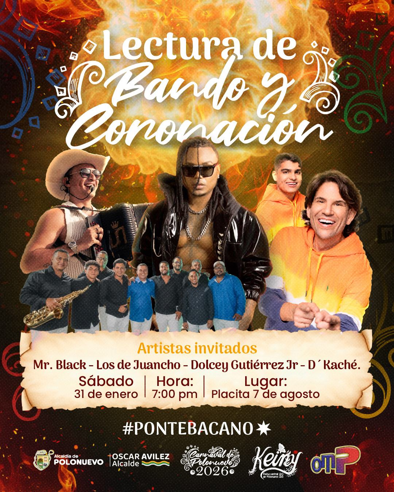
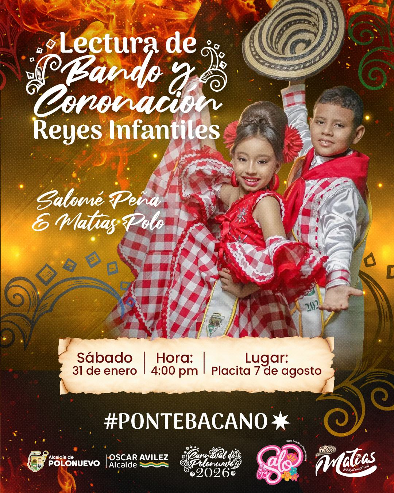
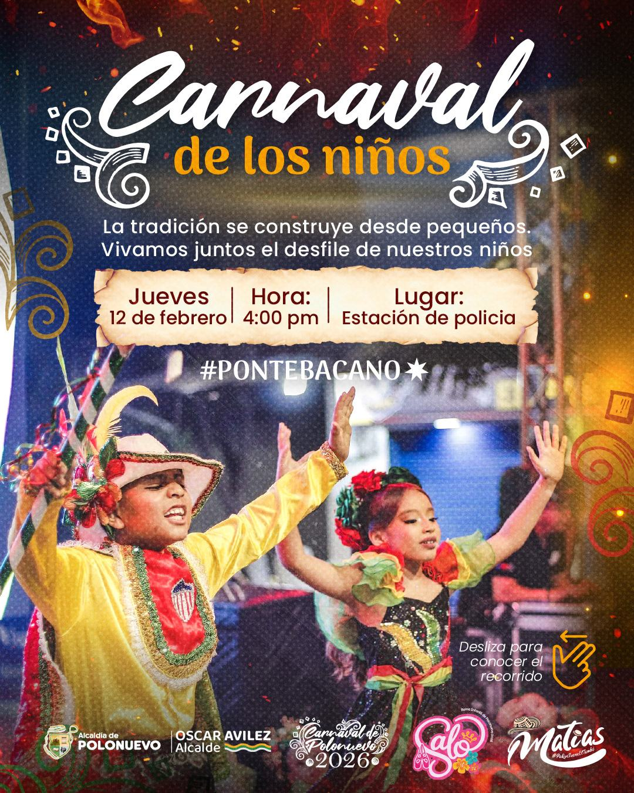
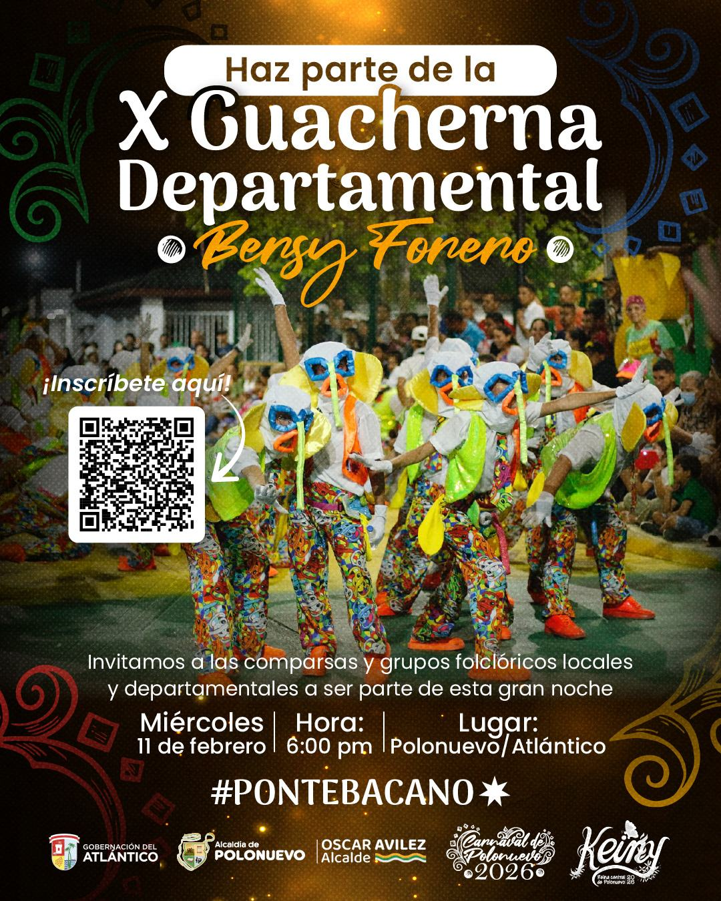
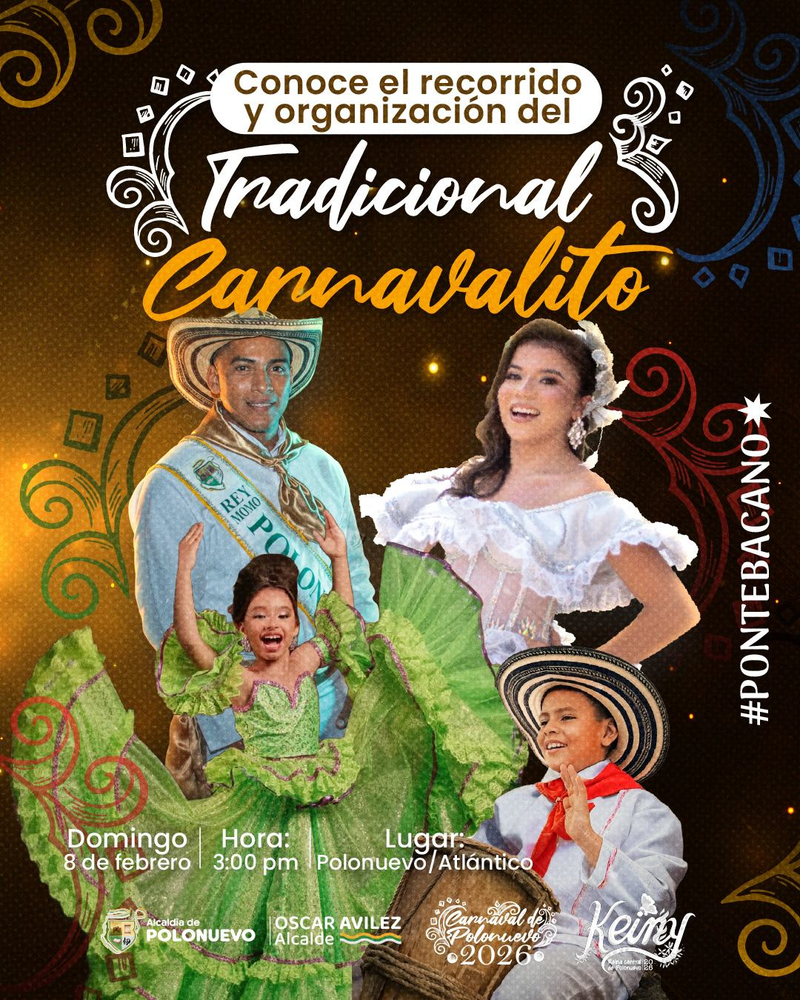
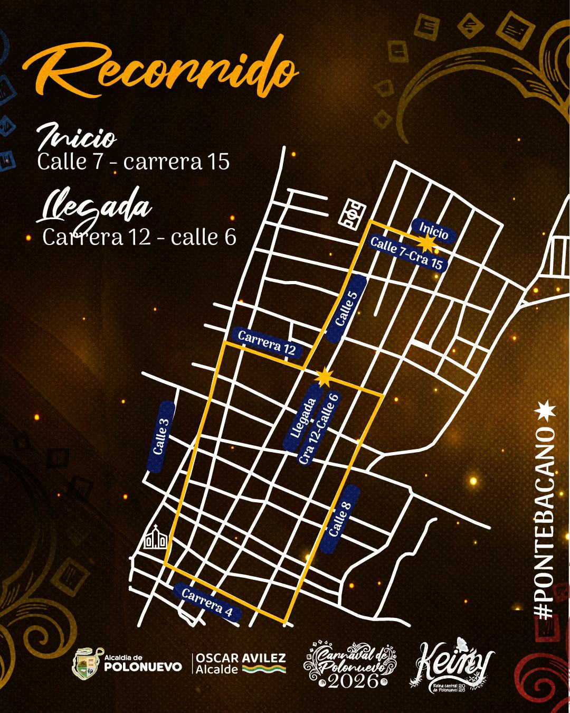
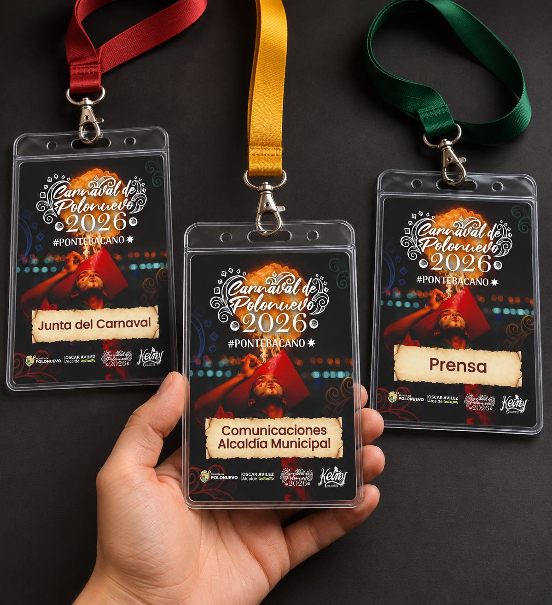
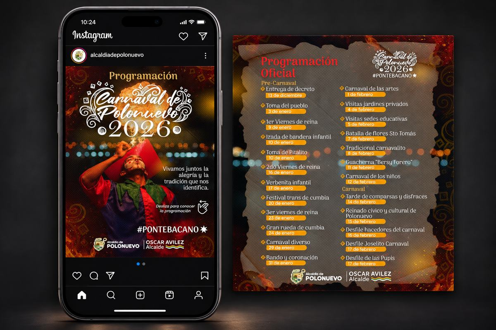
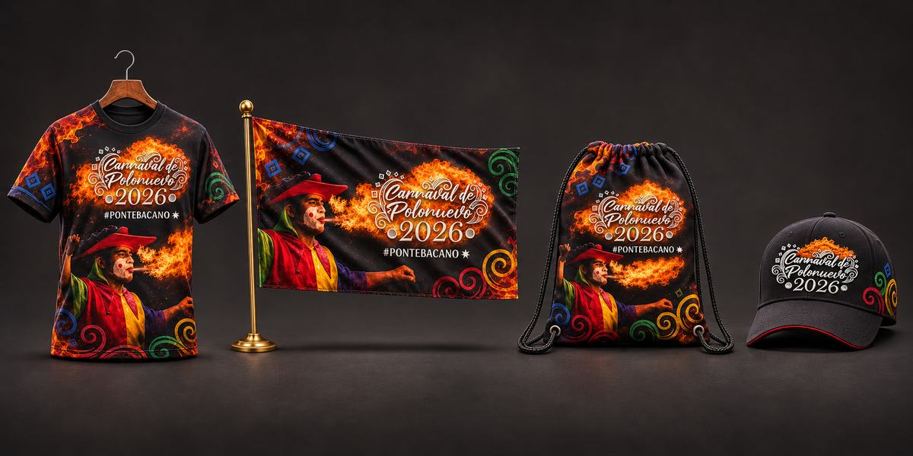
Entregables
- Identidad visual
- Programación en redes
- Afiches
- Mapa del recorrido
- Credenciales
- Camisetas, banderas, tulas y gorras